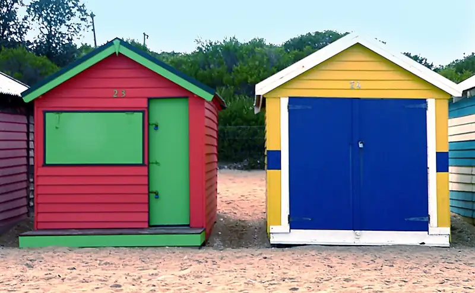

Dendy Street Beach, Brighton
Dendy Street Beach is a beach in Brighton, in the Bayside City Council area, good for all ages. Railway Ave/New St (bus) is a 9-minute walk away and the nearest public toilet is about 28 m away with a baby change table.

.jpg){kind=link}
Quick facts
- Toilets
- 28 m away, baby change, accessible
- Public transport
- Railway Ave/New St, bus (routes 600, 603, 923), 9 min walk
This page has basic info from the map: name, location and type. We have not checked the details yet. Know this place? Tell us.
Questions parents ask
- Where is Dendy Street Beach?
- Dendy Street Beach is in Brighton, Victoria.
- Is Dendy Street Beach free?
- Yes. It is a public beach, free to visit.
- Are there toilets at Dendy Street Beach?
- The nearest public toilet is about 28 m away, with a baby change table.
- How do I get to Dendy Street Beach by public transport?
- The closest stop is Railway Ave/New St (routes 600, 603, 923), a 9-minute walk.
Nearby places
- Beach House Brighton
Cafe or restaurant · BrightonToilet nearbyBus 9 min walk
- Green Point Coastal Reserve
Park · BrightonToilet nearbyFreeTrain 7 min walk
- Brighton Beach Gardens
Park · BrightonToilet nearbyFreeTrain 5 min walk
- Middle Brighton Beach
Beach · BrightonToilet nearbyFreeBus 8 min walk
- Playground at Robert Grieve V.C. Reserve
Playground · BrightonFreeBus 1 min walk
- Playground on Mair Street
Playground · BrightonToilet nearbyFreeBus 2 min walk
- Dendy Plaza
Shopping centre · BrightonToilet nearbyBus 2 min walk
- Sandringham Library
Library · SandringhamToilet nearbyFreeBus 3 min walk